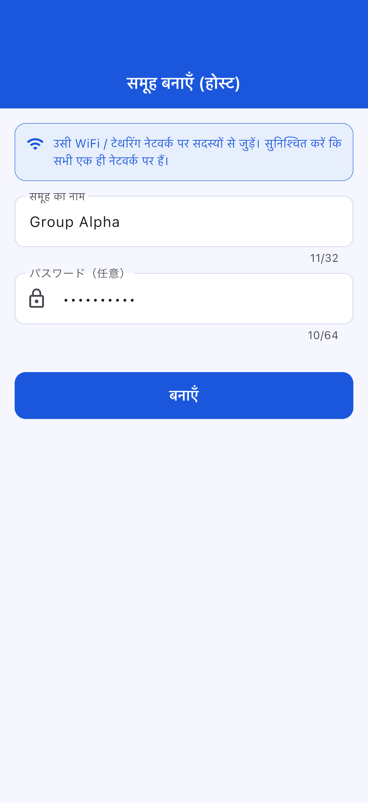
ऐप का नाम: OffLink
लक्षित उपयोगकर्ता: एक ही WiFi नेटवर्क में ग्रुप वॉइस कॉल करने के इच्छुक लोग
निर्माण तिथि: 9 मार्च 2026
अंतिम अपडेट: 11 अप्रैल 2026
OffLink एक ऐसा ऐप है जो एक ही WiFi / टेथरिंग वातावरण में बिना इंटरनेट के ग्रुप वॉइस कॉल करने की सुविधा प्रदान करता है। WebRTC द्वारा P2P संचार से कम विलंबता वाली वॉइस कॉल संभव होती है।
उपयोग के उदाहरण:
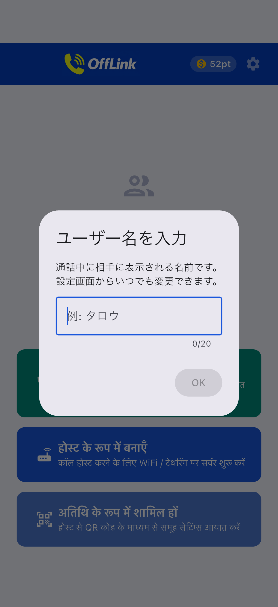
ऐप शुरू करने के तुरंत बाद की होम स्क्रीन।
OffLink WiFi LAN मोड में काम करता है। सभी लोग एक ही WiFi नेटवर्क से जुड़कर कॉल करते हैं।
मुख्य बात: इंटरनेट कनेक्शन आवश्यक नहीं है।
| भूमिका | समर्थित डिवाइस | विवरण |
|---|---|---|
| होस्ट | Android / iPhone | कॉल प्रबंधित करने वाला डिवाइस |
| गेस्ट | Android / iPhone | कॉल में शामिल होने वाला डिवाइस |
ध्यान दें: सभी को एक ही WiFi नेटवर्क से जुड़ा होना आवश्यक है।
| अनुमति | उपयोग | अस्वीकार करने पर प्रभाव |
|---|---|---|
| माइक्रोफ़ोन | वॉइस कॉल | कॉल नहीं हो सकती |
| कैमरा | QR कोड स्कैन | QR से ग्रुप पंजीकरण नहीं हो सकता |
| पास के डिवाइस (WiFi) ※Android | WiFi नेटवर्क डिटेक्शन | होस्ट डिटेक्शन नहीं हो सकता |
| लोकेशन ※Android | WiFi स्कैन (OS आवश्यकता) | WiFi SSID प्राप्त नहीं हो सकता |
| Bluetooth ※Android | हेडसेट कनेक्शन | हेडसेट उपयोग नहीं हो सकता |
| नोटिफ़िकेशन ※Android | कॉल आमंत्रण सूचना | बैकग्राउंड नोटिफ़िकेशन नहीं |
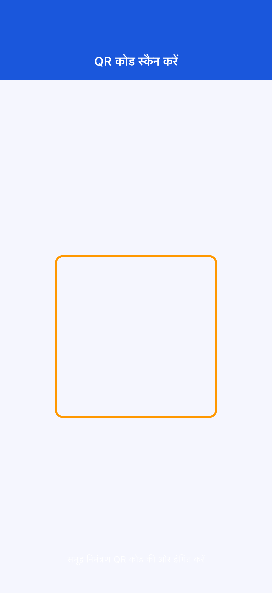
अनुमति अस्वीकार करने पर: "सेटिंग्स" → "ऐप्स" → "OffLink" से बदलें।
चरण 1: सभी एक ही WiFi से जुड़ें
चरण 2: "अभी कॉल करें" (हरा बटन) टैप करें
चरण 3: उपयोगकर्ता नाम दर्ज करें
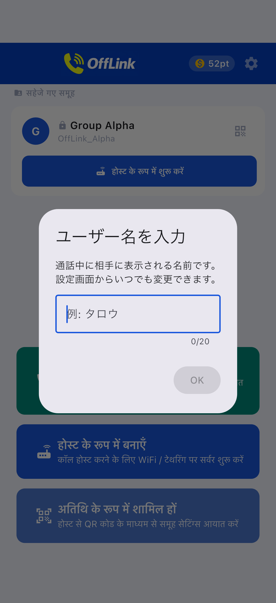
चरण 4: टियर चुनें और कॉल शुरू करें
चरण 5: सदस्यों को कॉल आमंत्रण स्वचालित रूप से भेजा जाएगा
चरण 1: "होस्ट के रूप में बनाएं" (नीला बटन) टैप करें
चरण 2: ग्रुप का नाम और पासवर्ड दर्ज करें और "बनाएं" दबाएं

चरण 3: क्रिएट एक्शन चुनें
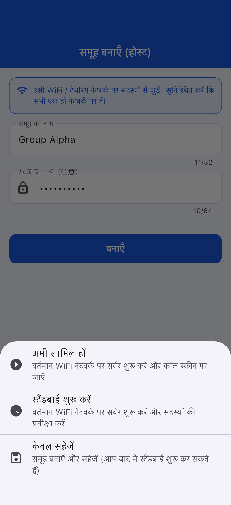
| कार्रवाई | विवरण |
|---|---|
| अभी जुड़ें | सर्वर शुरू करके कॉल आरंभ |
| स्टैंडबाय शुरू | सर्वर शुरू करके प्रतीक्षा |
| केवल सेव | बाद में शुरू किया जा सकता है |
चरण 1: "गेस्ट के रूप में शामिल हों" (हल्का नीला बटन) टैप करें
चरण 2: शामिल होने का तरीका चुनें
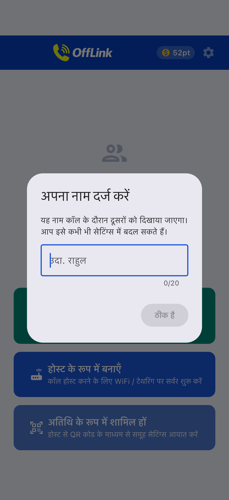
| तरीका | संचालन |
|---|---|
| 📱 QR कोड स्कैन करें | होस्ट का QR स्कैन करें |
| 📋 कोड पेस्ट करें | साझा किया गया कोड पेस्ट करें |
| ✏️ मैनुअल इनपुट | सीधे दर्ज करें |
QR कोड शेयर (होस्ट की तरफ):

कोड पेस्ट (गेस्ट की तरफ):
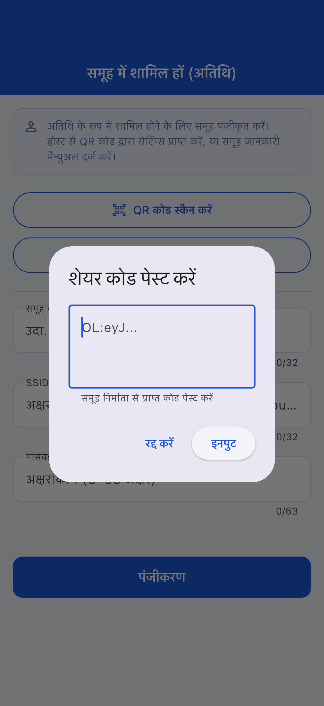
चरण 3: "रजिस्टर" टैप करें
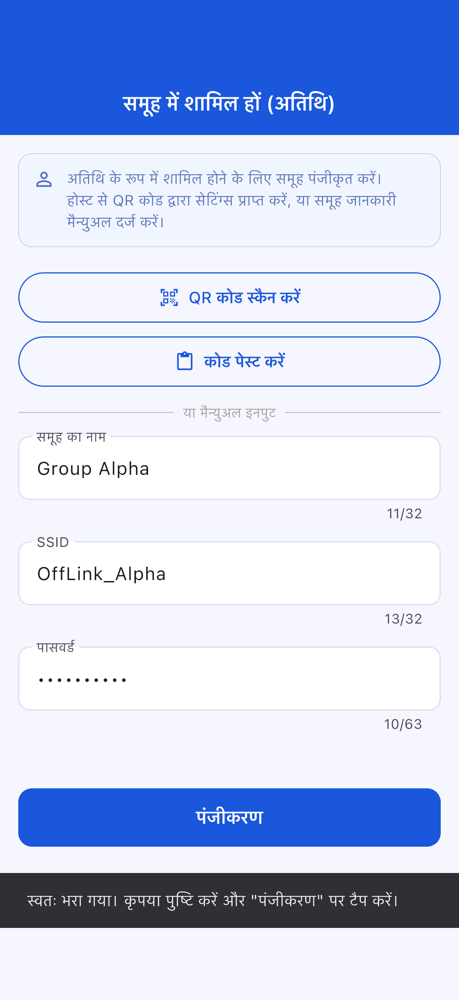
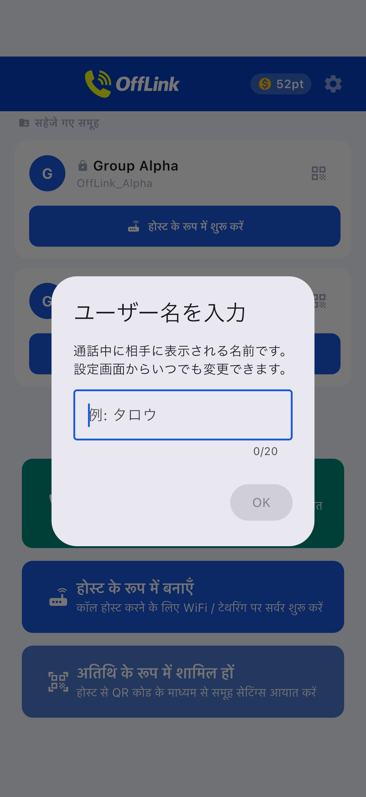
गेस्ट शामिल होने की स्क्रीन:
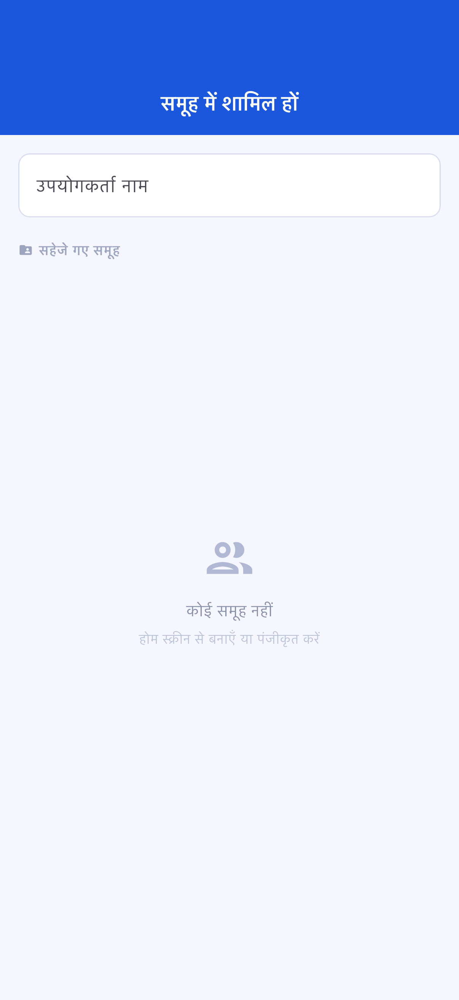
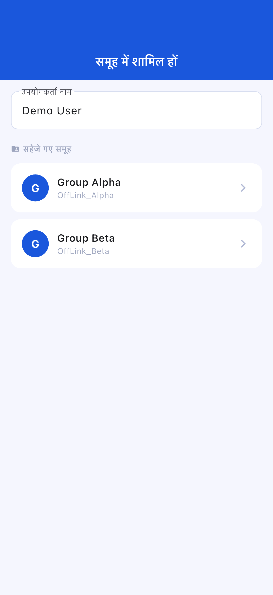
स्टैंडबाय स्क्रीन:
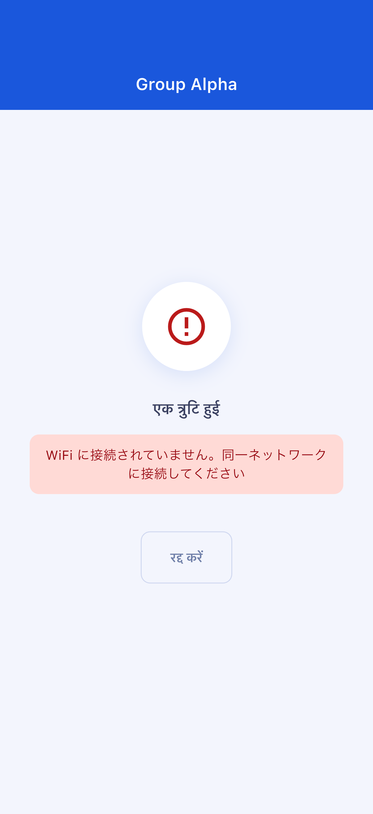
कॉल स्क्रीन:
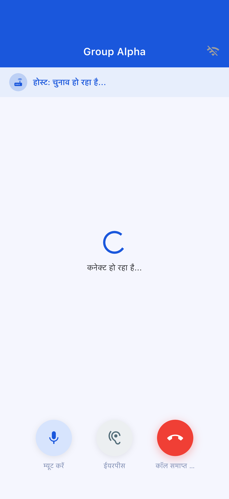
| बटन | कार्य |
|---|---|
| 🎤 म्यूट | माइक ऑन/ऑफ |
| 🔊 ऑडियो आउटपुट स्विच | स्पीकर / Bluetooth / ईयरपीस |
| 🔴 कॉल समाप्त | कॉल से बाहर निकलें |
| टियर | खपत पॉइंट | अधिकतम प्रतिभागी |
|---|---|---|
| Standard | 10 pt | 4 लोग |
| Large | 20 pt | 10 लोग |
OffLink के अंदर से ऑटो स्टार्ट नहीं हो सकता। मैन्युअल रूप से सेट करें।
"सेटिंग्स" → "ऐप्स" → "OffLink" → "अनुमतियाँ" से बदलें
| आइटम | सीमा विवरण |
|---|---|
| अधिकतम प्रतिभागी | Standard: 4 / Large: 10 |
| कॉल विधि | केवल WiFi LAN |
| बैकग्राउंड | डिवाइस के अनुसार सीमित |
| ग्रुप सेव सीमा | Free: 5 / Premium: असीमित |
| आइटम | अनुशंसित |
|---|---|
| Android | 5.0+ (API 21+) |
| iOS | 13.0+ |
| बैटरी | 80% से अधिक अनुशंसित |
| स्टोरेज | 100MB से अधिक |
| WiFi | राउटर / टेथरिंग / पॉकेट WiFi |